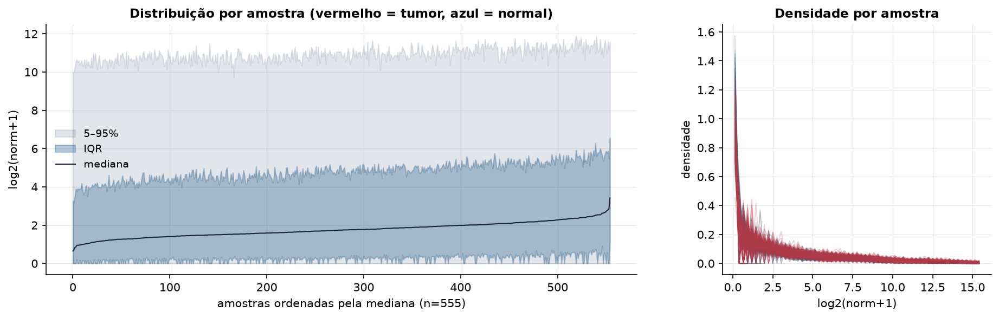
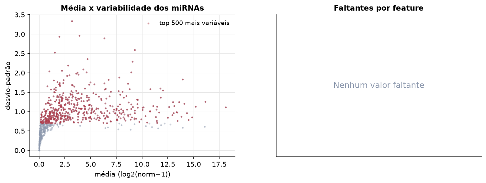
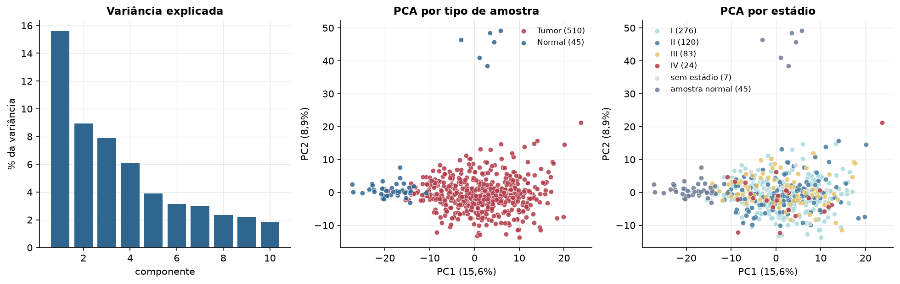
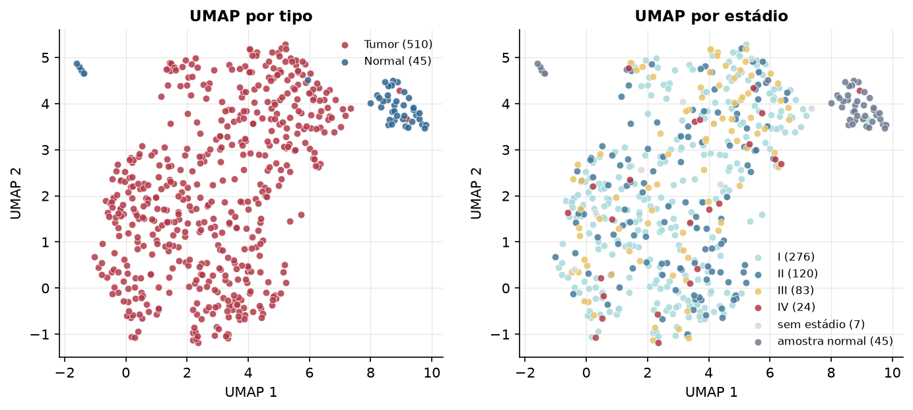
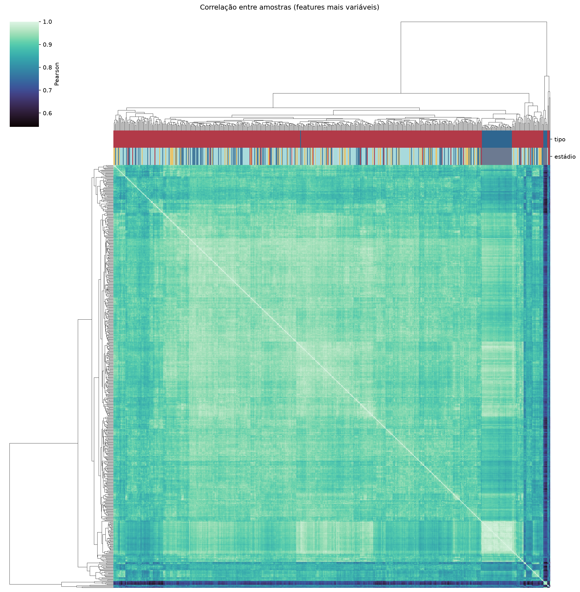
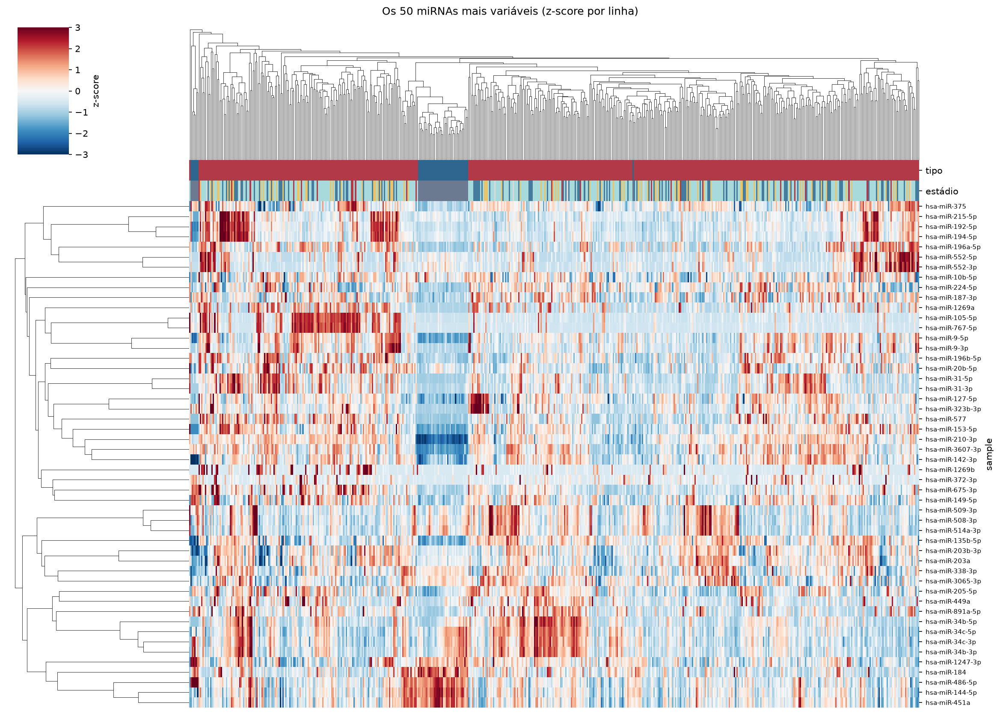
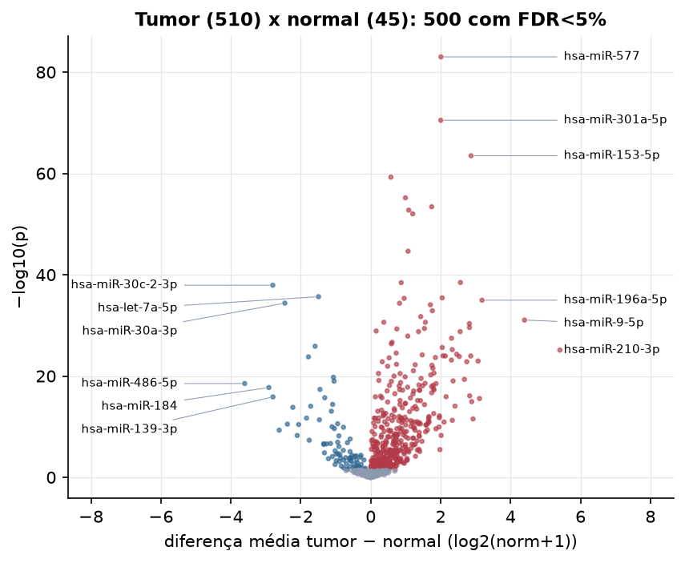
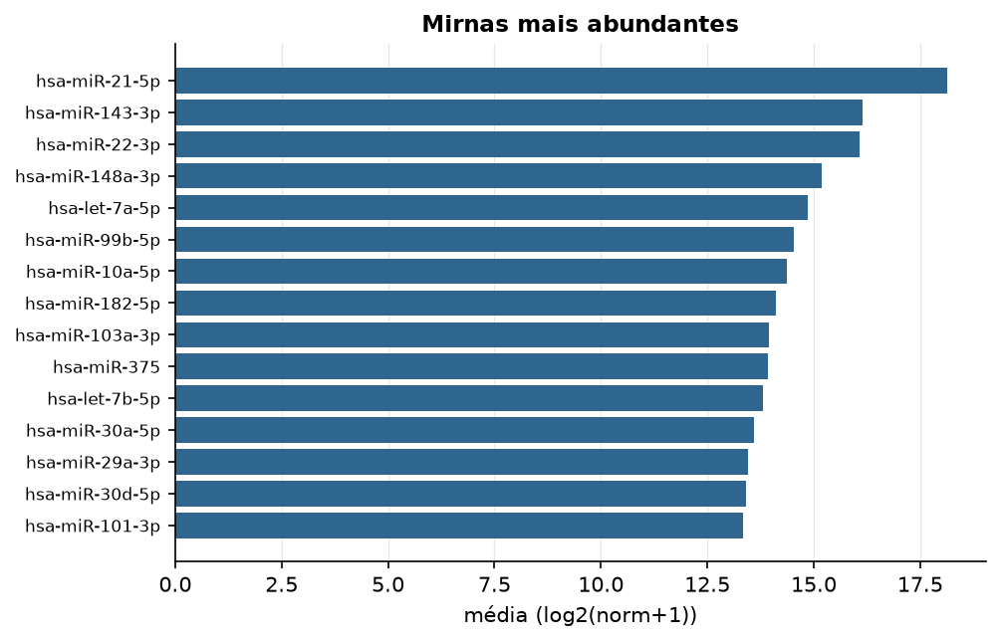

LUAD · miRNA-seq (PanCanAtlas)
miRNA maduro, normalizado e corrigido por lote (EB), log2(x+1) · gerado em 22/10/2026 01:02
743miRNAs
510amostras tumorais
45amostras normais
0,0%valores faltantes
Fonte: PanCanAtlas (pancanMiRs_EBadjOnProtocolPlatformWithoutRepsWithUnCorrectMiRs_08_04_16.xena)
Fita madura (5p/3p) já normalizada. As contagens brutas por precursor estão no relatório de contagens.
Principais resultados
- 743 miRNAs medidos em 555 amostras (510 tumorais e 45 normais); 0,0% dos valores estão faltando.
- Os dois primeiros componentes principais explicam 15,6% e 8,9% da variância das features mais variáveis.
- Correlação mediana entre amostras: 0,92.
- Amostras com correlação muito abaixo das demais (possíveis outliers técnicos): TCGA-50-6591-01, TCGA-44-3398-11, TCGA-44-2655-11, TCGA-44-2657-11, TCGA-44-2668-11, TCGA-44-3396-11, TCGA-78-7155-01, TCGA-53-7624-01, TCGA-86-8074-01, TCGA-62-8402-01.
- Tumor x normal: 500 miRNAs diferentes com FDR < 5% (413 maiores no tumor, 87 maiores no normal; 45 pacientes têm o par tumor-normal).
- Mais aumentados no tumor: hsa-miR-577, hsa-miR-301a-5p, hsa-miR-153-5p, hsa-miR-155-3p, hsa-miR-301b, hsa-miR-33b-5p, hsa-miR-183-3p, hsa-miR-4668-3p.
- Mais reduzidos no tumor: hsa-miR-30c-2-3p, hsa-let-7a-5p, hsa-miR-30a-3p, hsa-miR-338-5p, hsa-let-7c-5p, hsa-miR-140-3p, hsa-let-7e-5p, hsa-miR-486-5p.
- Associações clínicas com p < 0,05 nos componentes principais: PC3 com estádio (p=0.0028); PC3 com sexo (p=0.0027); PC3 com idade (p=6.2e-05); PC3 com sobrevida (p=0.0016).
Distribuição dos valores


Estrutura das amostras




Tumor x normal

Features mais diferentes entre tumor e normal
| sample | diferenca_tumor_menos_normal | t | p | fdr |
|---|---|---|---|---|
| hsa-miR-577 | 2.009 | 24.415 | 9.85e-84 | 7.28e-81 |
| hsa-miR-301a-5p | 2.002 | 26.483 | 3.28e-71 | 1.21e-68 |
| hsa-miR-153-5p | 2.868 | 28.96 | 3.31e-64 | 8.15e-62 |
| hsa-miR-155-3p | 0.577 | 19.325 | 5.61e-60 | 1.04e-57 |
| hsa-miR-301b | 0.993 | 19.956 | 6.58e-56 | 9.73e-54 |
| hsa-miR-33b-5p | 1.743 | 23.715 | 3.89e-54 | 4.8e-52 |
| hsa-miR-183-3p | 1.087 | 21.952 | 1.76e-53 | 1.86e-51 |
| hsa-miR-4668-3p | 1.202 | 23.398 | 9.77e-53 | 9.03e-51 |
| hsa-miR-135b-3p | 1.068 | 20.859 | 2.31e-45 | 1.9e-43 |
| hsa-miR-183-5p | 2.566 | 26.202 | 3.42e-39 | 2.47e-37 |
| hsa-miR-137 | 0.871 | 14.326 | 3.68e-39 | 2.47e-37 |
| hsa-miR-30c-2-3p | -2.801 | -25.889 | 1.19e-38 | 7.33e-37 |
| hsa-let-7a-5p | -1.493 | -22.368 | 2.18e-36 | 1.24e-34 |
| hsa-miR-31-5p | 2.043 | 16.109 | 3.74e-36 | 1.98e-34 |
| hsa-miR-4652-5p | 0.957 | 14.355 | 4.64e-36 | 2.28e-34 |
| hsa-miR-196a-5p | 3.183 | 16.717 | 1.09e-35 | 5.02e-34 |
| hsa-miR-30a-3p | -2.457 | -22.307 | 4.12e-35 | 1.79e-33 |
| hsa-miR-188-3p | 0.824 | 16.854 | 4.36e-35 | 1.79e-33 |
| hsa-miR-20a-3p | 1.707 | 20.782 | 8.68e-35 | 3.37e-33 |
| hsa-miR-224-5p | 1.762 | 15.987 | 1.32e-33 | 4.87e-32 |
| hsa-miR-9-3p | 1.43 | 14.515 | 1.87e-32 | 6.58e-31 |
| hsa-miR-9-5p | 4.398 | 20.162 | 9.09e-32 | 3.05e-30 |
| hsa-miR-3607-5p | 0.375 | 12.472 | 2.44e-31 | 7.68e-30 |
| hsa-miR-31-3p | 1.562 | 14.329 | 2.5e-31 | 7.68e-30 |
| hsa-miR-708-5p | 2.82 | 21.632 | 4.59e-31 | 1.36e-29 |
| hsa-miR-96-5p | 2.824 | 22.403 | 2.71e-30 | 7.72e-29 |
| hsa-miR-671-5p | 1.535 | 19.969 | 4.09e-30 | 1.12e-28 |
| hsa-miR-20b-3p | 0.747 | 12.777 | 4.96e-30 | 1.31e-28 |
| hsa-miR-96-3p | 0.155 | 12.332 | 1.3e-29 | 3.3e-28 |
| hsa-miR-33a-5p | 2.557 | 19.32 | 1.74e-29 | 4.18e-28 |
Associação com variáveis clínicas
p-valores da associação dos três primeiros componentes principais (só tumores) com estádio (Kruskal-Wallis), sexo (Mann-Whitney), idade (Spearman) e sobrevida global (Cox univariado).
| estádio (Kruskal) | sexo (Mann-Whitney) | idade (Spearman) | sobrevida OS (Cox) | |
|---|---|---|---|---|
| PC1 (13,3%) | 0.886 | 0.221 | 0.153 | 0.429 |
| PC2 (8,8%) | 0.055 | 0.111 | 0.753 | 0.266 |
| PC3 (6,7%) | 0.003 | 0.003 | 6.22e-05 | 0.002 |
Mais abundantes
